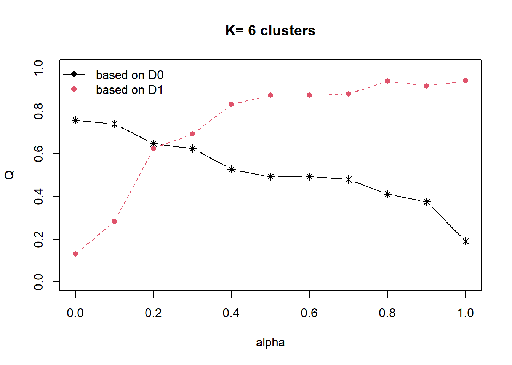
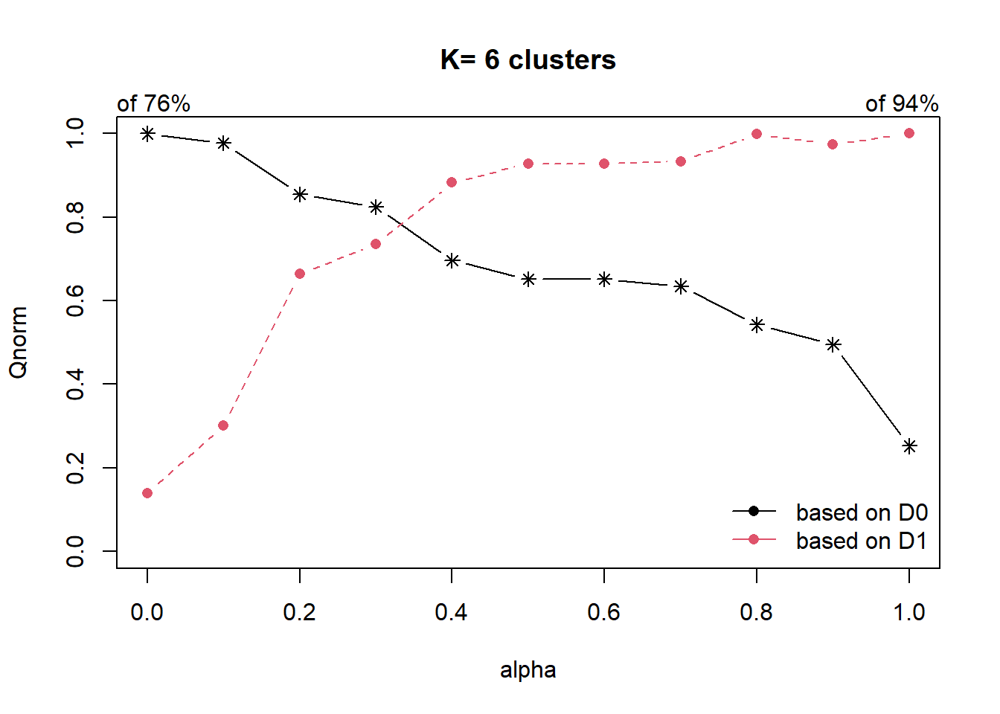
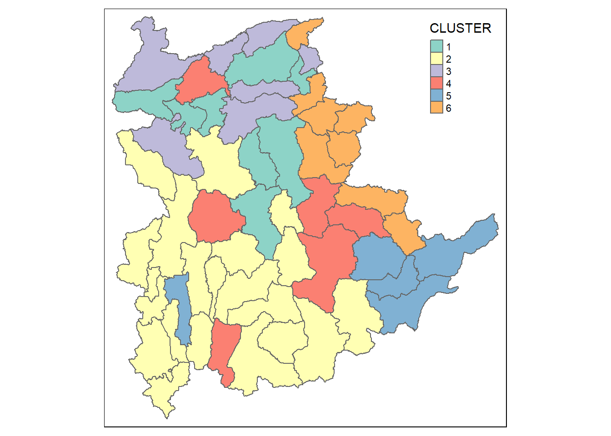

pacman::p_load(rgdal,spdep,tmap,sf,ggpubr,cluster,factoextra,NbClust,heatmaply,corrplot,psych,tidyverse,ClustGeo)In-class Exercise 3: Spatially Constrained Clustering: ClustGeo Method
Getting Started
Below are the codes from the Hands-on Exercise 3 to be brought over for this In-class Exercise 3.
Installing and Loading packages
In the below code chunks, we copy the list of packages that we used in the Hands-on Exercise 3 and install a new package called ClustGeo.
Creating the shan_sf dataframe
shan_sf<-st_read(dsn="data/geospatial",layer="myanmar_township_boundaries")%>%
filter(ST %in% c("Shan (East)","Shan (North)","Shan (South)"))Reading layer `myanmar_township_boundaries' from data source
`C:\thaorocket\ISS624\In-class_Ex3\data\geospatial' using driver `ESRI Shapefile'
Simple feature collection with 330 features and 14 fields
Geometry type: MULTIPOLYGON
Dimension: XY
Bounding box: xmin: 92.17275 ymin: 9.671252 xmax: 101.1699 ymax: 28.54554
Geodetic CRS: WGS 84ict<-read_csv("data/aspatial/Shan-ICT.csv")Rows: 55 Columns: 11
── Column specification ────────────────────────────────────────────────────────
Delimiter: ","
chr (4): District Pcode, District Name, Township Pcode, Township Name
dbl (7): Total households, Radio, Television, Land line phone, Mobile phone,...
ℹ Use `spec()` to retrieve the full column specification for this data.
ℹ Specify the column types or set `show_col_types = FALSE` to quiet this message.ict_derived<-ict %>%
mutate(`RADIO_PR`=`Radio`/`Total households`*1000)%>%
mutate(`TV_PR`=`Television`/`Total households`*1000)%>%
mutate(`LLPHONE_PR`=`Land line phone`/`Total households`*1000)%>%
mutate(`MPHONE_PR`=`Mobile phone`/`Total households`*1000)%>%
mutate(`COMPUTER_PR`=`Computer`/`Total households`*1000)%>%
mutate(`INTERNET_PR`=`Internet at home`/`Total households`*1000)%>%
rename(`DT_PCODE` =`District Pcode`,`DT`=`District Name`,`TS_PCODE`=`Township Pcode`, `TS`=`Township Name`,`TT_HOUSEHOLDS`=`Total households`,`RADIO`=`Radio`, `TV`=`Television`,
`LLPHONE`=`Land line phone`, `MPHONE`=`Mobile phone`,`COMPUTER`=`Computer`, `INTERNET`=`Internet at home`)shan_sf<-left_join(shan_sf,ict_derived,by=c("TS_PCODE"="TS_PCODE"))Extracting clustering variables
cluster_vars<-shan_sf %>%
st_set_geometry(NULL) %>%
select("TS.x","RADIO_PR","TV_PR","LLPHONE_PR","MPHONE_PR","COMPUTER_PR")row.names(cluster_vars)<-cluster_vars$TS.xshan_ict<-select(cluster_vars,c(2:6))Creating Proximity Matrix
proxmat<-dist(shan_ict,method="euclidean")Spatially Constrained Clustering: ClustGeo Method
Ward-like hierarchical clustering: ClustGeo
hclustgeo() of ClustGeo package performs a typical Ward-like hierarchical clustering.
In order to perform non-spatially constrained hierarchical clustering, we only need to provide the function a proximity matrix (similarity/dissimilarity matrix) as shown in the code chunk:
nongeo_cluster<-hclustgeo(proxmat)
plot(nongeo_cluster,cex=0.5)
rect.hclust(nongeo_cluster,k=6,border=2:5)
Note that the proximity matrix must be an object of class dist, i.e. an object obtained from using function dist().
Mapping the clusters formed
groups<-as.factor(cutree(nongeo_cluster,k=6))shan_sf_ngeo_cluster<-cbind(shan_sf,as.matrix(groups))%>%
rename(`CLUSTER`=`as.matrix.groups.`)qtm(shan_sf_ngeo_cluster,"CLUSTER")
Spatially Constrained Hierarchical Clustering
Before we can perform spatially constrained hierarchical clustering, a spatial distance will need to be computed by using st_distance() of sf package.
dist<-st_distance(shan_sf,shan_sf)
distmat<-as.dist(dist)as.dist() function convert the data frame dist into matrix.
Next, choicealpha() will be used to determined a suitable value for the mixing parameter alpha shown in the below code chunks:
cr<-choicealpha(proxmat,distmat,range.alpha=seq(0,1,0.1),K=6,graph=TRUE)

From the above graph, we can see that with alpha of 0.3, d0 (attribute homogeneity) will only drop to 0.8 (slight drop) while spatial homogeneity will increase to 0.7 (steep increase).
We then use alpha of 0.3 in the code chunk below:
clustG<-hclustgeo(proxmat,distmat,alpha=0.3)Next, we use cutree() to derive the cluster object:
groups<-as.factor(cutree(clustG,k=6))We will then join back the group list of shan_sf polygon feature data frame by using the code chunk below:
shan_sf_Gcluster<-cbind(shan_sf,as.matrix(groups))%>%
rename(`CLUSTER`=`as.matrix.groups.`)Last, we will then plot the map of the newly delineated spatially constrained clusters.
qtm(shan_sf_Gcluster,"CLUSTER")